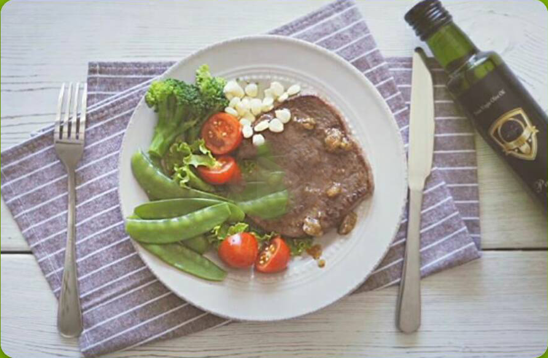
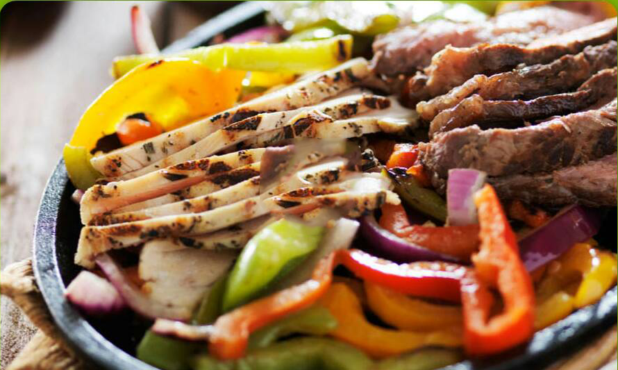

- 共13天第一天
- 一杯黑咖啡
- 二个鸡蛋
- 一个番茄
- 无限量菠菜
- 150克牛排
- 无限量生菜
- 二升柠檬水
- 查看完整计划
孙小红
平面模特/网红
一开始从演员张馨予微博中看到他正在执行 后半信半疑的开始尝试。13的减肥计划毫 无饥饿感，能吃到的食物非常丰富，最后一天 晚上激动的站上了体重秤，竟然瘦了16.7斤。 不可思议的同时终于相信网络上关于哥本哈根 小了，13天的经历告诉我选择对方的方法真的 很重要！
计划要点
- 正确的食物是食谱效果的基础，请勿购买不符 合食谱要求的食材。(例如食材脂肪、淀粉、 蛋白质等含量不符合要求)
- 严格的执行是食谱效果的关键，请勿随意替换 或者跳过食谱某项，这都将对食谱效果产生很 大的影响。（列如跳过某一餐不吃）
食谱简介
- 哥本哈根食谱是基于一个非常严格的规则与束 缚的，所以它不仅能帮助你减重，摆脱脂肪团 并且能增进你的新陈代谢。
- 以减重为目的，哥本哈根食谱找到一个减重 与健康的平衡点。执行哥本哈根食谱对人体器 官的负荷会比平时稍微加重（燃烧脂肪，大大 提高新陈代谢会让你有是觉得累），这种伤害 远远小于吸烟对人体所产生的伤害与影响。
- 餐单必须严格坚持13天。这就是其难以坚持 却非常有效的原因。
计划准备
- 请选择合适时间开始按照清单提前准备食 材
食谱规则
- 请在你没有出行和聚餐计划的时间进行，以免 被外界打断。
- 请预先购买食谱上的实物。（制定计划后，您 可以在“我的计划”的“购物清单”中查看所需要 购买的食材，并且点击划去已购买的食材）。
- 节食期间如果感到饥饿，请大量喝水。每天最 少饮用2L水，可以加入柠檬片或天然茶叶。
- 不能喝水，不能吃口香糖（包括糖都会改变食 谱对新陈代谢的作用）。
- 你可以食用盐，胡椒粉及其他调味料。
- 鱼不能被取代—如果你被去鱼，你执行的就 不是哥本哈根食谱了。